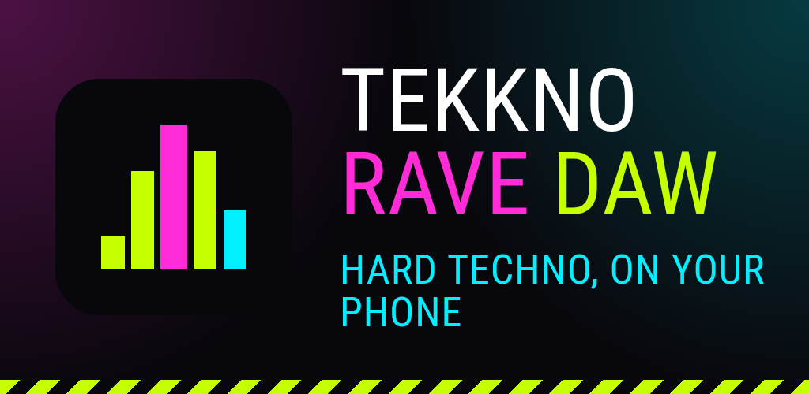
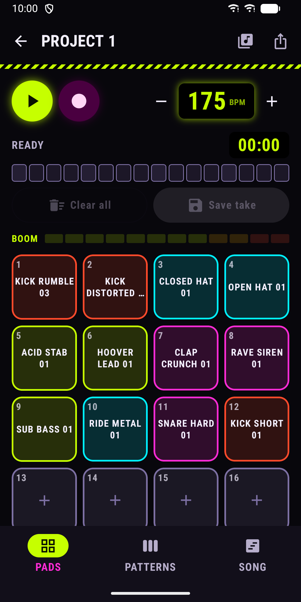
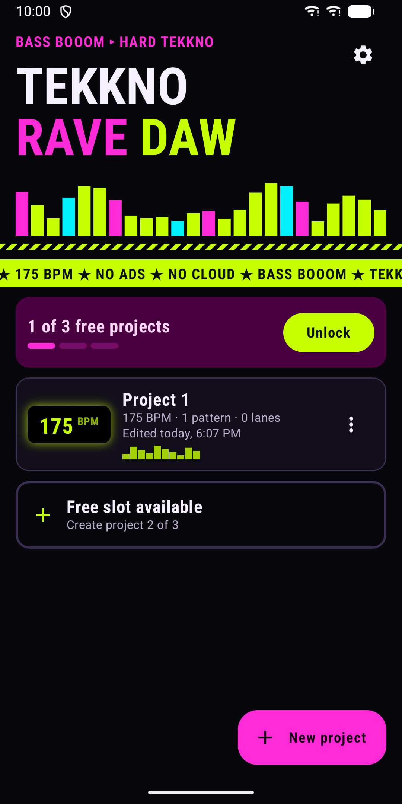
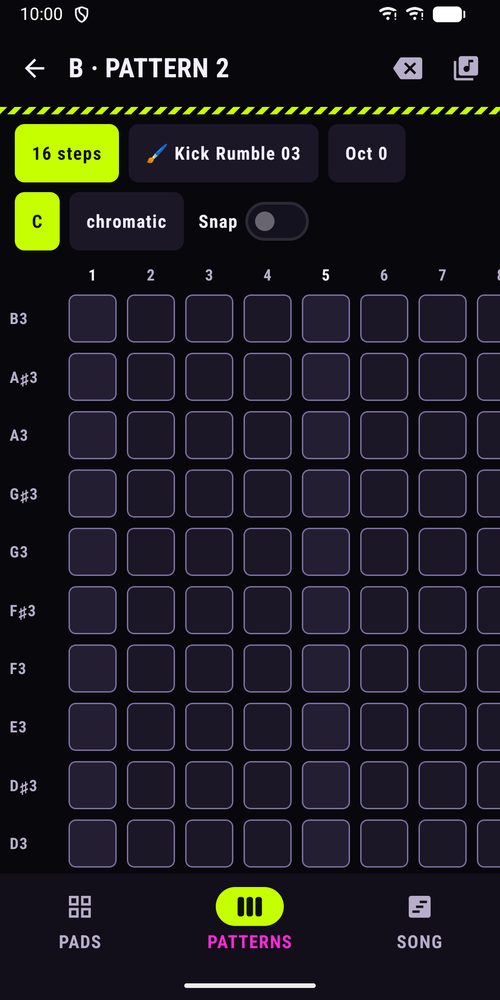
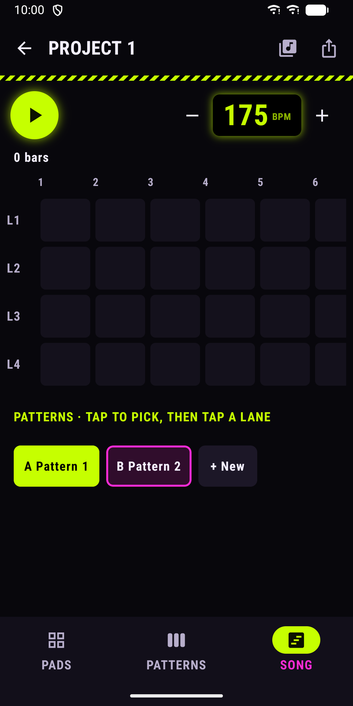
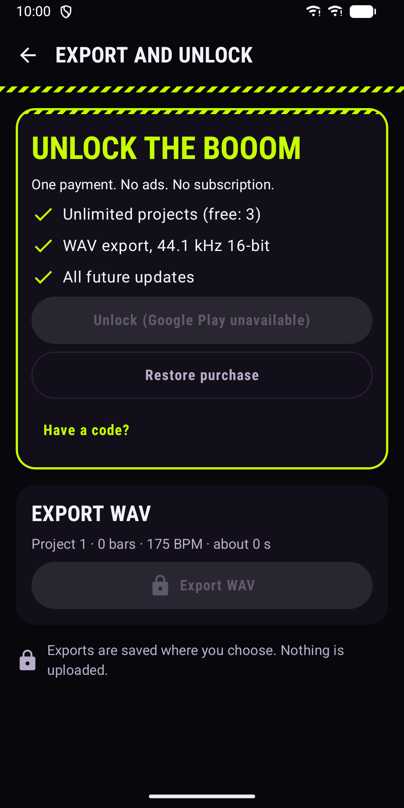

Tekkno Rave DAW: Beat Maker
Hard techno and hardcore groovebox with pads, a pitch grid and a song view.






About
Tekkno Rave DAW is a small groovebox for hard techno, gabber and hardcore. Sketch a track on your phone: hit pads, paint notes on a pitch grid and arrange patterns into a song. PADS - 16 pads. The first 12 start with a ready kit: kicks, hats, claps, snare, acid stab, hoover, siren and sub bass. - Record a sample with the microphone straight onto a pad. - Import your own audio files with the system file picker. - Record live: play the pads over a 16-step loop. Your hits snap to the grid (1/16 or 1/8). Pause, record again to add on top, then save the take as a new pattern. PATTERN GRID - Steps run left to right, pitch runs bottom to top. A higher row is a higher pitch. - 8, 16, 32 or 64 steps, with octave shift and optional snap to a scale. - Paint with any sample, so kicks, stabs and leads can share one pattern. - Undo and redo. Every edit is saved automatically. SONG - 4 lanes. Pick a pattern, tap a bar to place it. Clips in a lane never overlap. - Move clips by dragging, or use the clip menu. - Tempo from 140 to 220 BPM. 50 SAMPLES INCLUDED Kicks, hats, rides, claps, snares, sub and acid bass, hoover and rave stabs, sirens, risers and impacts. The bundled samples are released under CC0. Licences are listed in Settings. PURCHASE - The app starts with 3 projects. - One in-app purchase (single payment, not a subscription) unlocks unlimited projects and WAV export (44.1 kHz, 16-bit). - Everything else works without the purchase. - You can restore the purchase with the same Google account. HOME SCREEN WIDGET Shows your latest projects with their BPM. Tap one to open its pads. A switch in Settings hides project names on the home screen. PRIVACY - The app works without an account and without an internet connection. It does not declare the internet permission. - No analytics, no tracking, no advertising. - Projects and recordings stay on your device and are not part of cloud backups. - The microphone is used only while you record a sample, and the app works without it. - WAV exports are saved where you choose. - Settings has a "Delete all data" button. ACCESSIBILITY - Follows your system light or dark theme. - Screen reader labels on pads, grid cells and clips, with tap alternatives for drag gestures. - Large touch targets, phone and tablet layouts. - Respects the system setting to remove animations. Visual pulses stay under 3 per second.